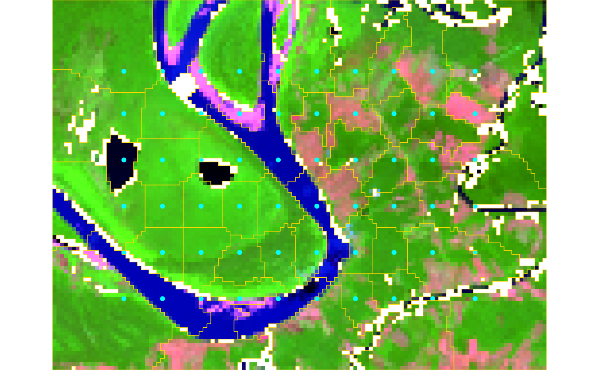
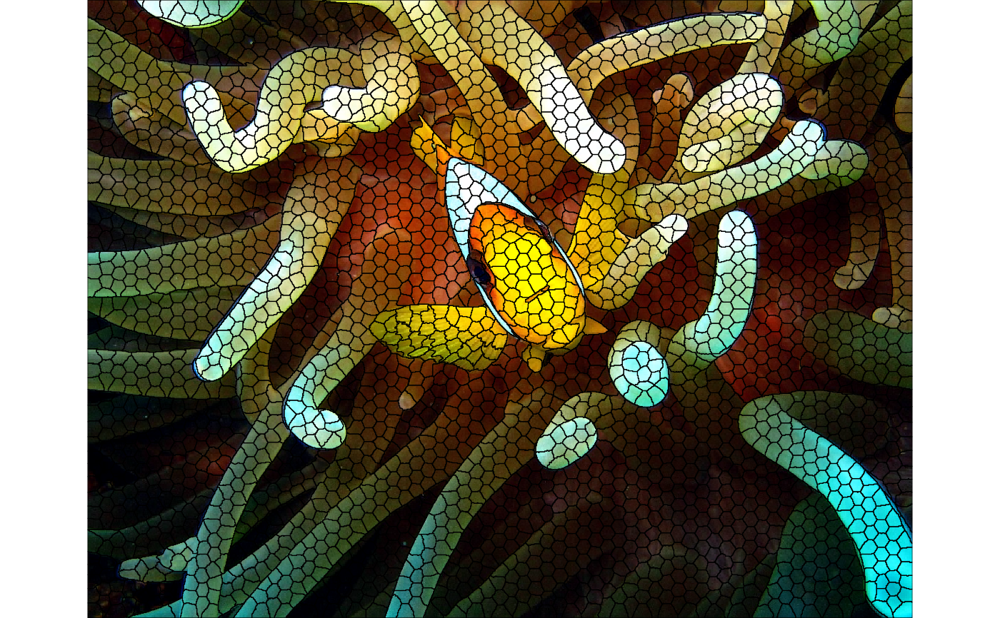

Segment an image into superpixels using the SNIC algorithm. This function wraps a C++ implementation operating on any number of spectral bands and uses 4-neighbor (von Neumann) connectivity.
Arguments
- x
Image data. For the
arraymethod this must be a numeric array with dimensions(height, width, bands)in column-major order (R's native storage). For theSpatRastermethod (from terra), dimensions and band ordering are inferred automatically.- seeds
Initial seed coordinates. The required format depends on the spatial status of
x:If
xhas no CRS: a two-column data frame(r, c)giving 1-based pixel coordinates.If
xhas a CRS: a two-column data frame with columnslatandlonexpressed inEPSG:4326. These are converted internally to pixel coordinates before segmentation.
Seeds define the starting cluster centers. They are usually generated with
snic_gridhelpers (e.g. rectangular, hexagonal or random), or placed interactively viasnic_grid_manual.- compactness
Non-negative numeric value controlling the balance between feature similarity and spatial proximity (default = 0.5). Larger values produce more spatially compact superpixels.
- ...
Currently unused; reserved for future extensions.
Value
An object of class snic bundling the segmentation result together
with per-cluster summaries produced by the SNIC algorithm. The segmentation
result can be accessed using snic_get_seg. The per-cluster
summaries can be accessed using snic_get_means and
snic_get_centroids.
Details
The algorithm performs clustering in a joint space that includes the image's
spectral dimensions and two spatial coordinates. Each seed initializes a
region, and pixels are assigned based on the SNIC distance metric combining
spectral similarity and spatial distance, weighted by compactness.
See also
snic_grid for seed generation,
snic_grid_manual for interactive placement,
snic_plot for visualizing results.
Examples
# Example 1: Geospatial raster
if (requireNamespace("terra", quietly = TRUE)) {
path <- system.file("demo-geotiff", package = "snic", mustWork = TRUE)
files <- file.path(
path,
c(
"S2_20LMR_B02_20220630.tif",
"S2_20LMR_B04_20220630.tif",
"S2_20LMR_B08_20220630.tif",
"S2_20LMR_B12_20220630.tif"
)
)
# Downsample for speed (optional)
s2 <- terra::aggregate(terra::rast(files), fact = 8)
# Generate a regular grid of seeds (lat/lon because CRS is present)
seeds <- snic_grid(
s2,
type = "rectangular",
spacing = 10L,
padding = 18L
)
# Run segmentation
seg <- snic(s2, seeds, compactness = 0.25)
# Visualize RGB composite with seeds and segment boundaries
snic_plot(
s2,
r = 4, g = 3, b = 1,
stretch = "lin",
seeds = seeds,
seg = seg
)
}

# Example 2: In-memory image (JPEG) + Lab transform
# Uses an example image shipped with the package (no terra needed)
if (requireNamespace("jpeg", quietly = TRUE)) {
img_path <- system.file(
"demo-jpeg/clownfish.jpeg",
package = "snic",
mustWork = TRUE
)
rgb <- jpeg::readJPEG(img_path) # h x w x 3 in [0, 1]
# Convert sRGB -> CIE Lab for perceptual clustering
dims <- dim(rgb)
dim(rgb) <- c(dims[1] * dims[2], dims[3])
lab <- grDevices::convertColor(
rgb,
from = "sRGB",
to = "Lab",
scale.in = 1,
scale.out = 1 / 255
)
dim(lab) <- dims
dim(rgb) <- dims
# Seeds in pixel coordinates for array inputs
seeds_rc <- snic_grid(lab, type = "hexagonal", spacing = 20L)
# Segment in Lab space and plot L channel with boundaries
seg <- snic(lab, seeds_rc, compactness = 0.1)
snic_plot(
rgb,
r = 1L,
g = 2L,
b = 3L,
seg = seg,
seg_plot_args = list(
border = "black"
)
)
}
